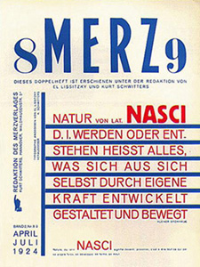
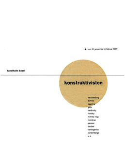
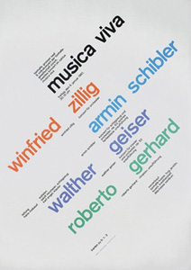
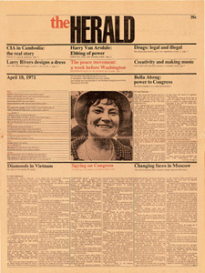

A typographic grid is a two-dimensional structure made up of a series of intersecting vertical and horizontal axes used to structure content. The grid serves as an armature on which a designer can organize text and images in a rational, easy to absorb manner.
Kurt Schwitters (German, 1887 –1948)

Merz number 89
Kurt Hermann Eduard Karl Julius Schwitters (20 June 1887 – 8 January 1948) was a German painter who was born in Hanover, Germany.
Schwitters worked in several genres and media, including Dada, Constructivism, Surrealism, poetry, sound, painting, sculpture, graphic design, typography and what came to be known as installation art. He is most famous for his collages, called Merz Pictures.
Jan Tschichold (Swiss, 1902–1974)

Konstruktivisten
Tschichold was the son of a provincial signwriter, and he was trained in calligraphy. This artisan background and calligraphic training set him apart from almost all other noted typographers of the time, since they had inevitably trained in architecture or the fine arts.
Tschichold’s artisan background may help explain why he never worked with handmade papers and custom fonts as many typographers did, preferring instead to use stock fonts on a careful choice from commercial paper stocks. After the election of Hitler in Germany, all designers had to register with the Ministry of Culture, and all teaching posts were threatened for anyone who was sympathetic to communism.
After Tschichold took up a teaching post in Munich at the behest of Paul Renner, both he and Tschichold were denounced as “cultural Bolshevists”. Ten days after the Nazis surged to power in March 1933, Tschichold and his wife were arrested. During the arrest, Soviet posters were found in his flat, casting him under suspicion of collaboration with communists. All copies of Tschichold’s books were seized by the Gestapo “for the protection of the German people”.
After six weeks a policeman somehow found him tickets for Switzerland, and he and his family managed to escape Nazi Germany in August 1933. Apart from short visits to England in 1937-1938 (at the invitation of the Penrose Annual), and 1947–1949 (at the invitation of Ruari McLean, the British typographer, with whom he worked on the design of Penguin Books), he lived the rest of his life in Switzerland.
Josef Müller-Brockmann (1914–1996)

Musica Viva (poster)
“The grid system is an aid, not a guarantee. It permits a number of possible uses and each designer can look for a solution appropriate to his personal style. But one must learn how to use the grid; it is an art that requires practice.”
— Josef Muller-Brockmann
Josef Müller-Brockmann, (May 9, 1914, in Rapperswil–August 30, 1996), was a Swiss graphic designer and teacher. He studied architecture, design and history of art at both the University and Kunstgewerbeschule in Zurich. In 1936 he opened his Zurich studio specialising in graphic design, exhibition design and photography. From 1951 he produced concert posters for the Tonhalle in Zurich. In 1958 he became a founding editor of New Graphic Design along with R.P. Lohse, C. Vivarelli, and H. Neuburg.
In 1966 he was appointed European design consultant to IBM. Müller-Brockman was author of the 1961 publications The Graphic Artist and his Design Problems, Grid Systems in Graphic Design where he advocates use of the grid for page structure, and the 1971 publications History of the Poster and A History of Visual Communication.
Massimo Vignelli (Italian, b. 1931)

The Herald
“If you can design one thing, you can design everything.”
— Massimo Vignelli
Massimo Vignelli (born 1931 in Milan, Italy) is a designer who has done work in a number of areas ranging from package design to furniture design to public signage to showroom design through Vignelli Associates, which he co-founded with his wife, Lella.